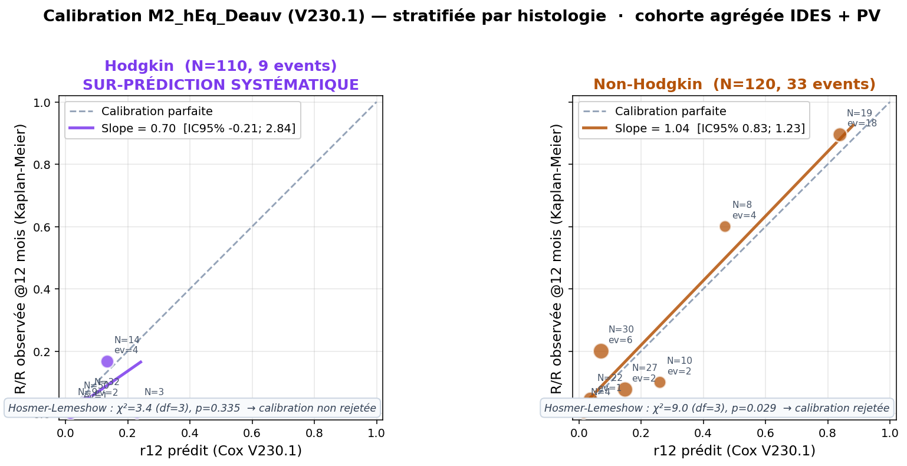
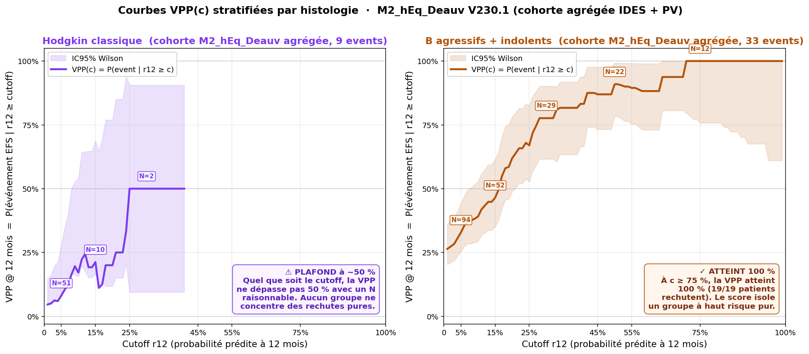
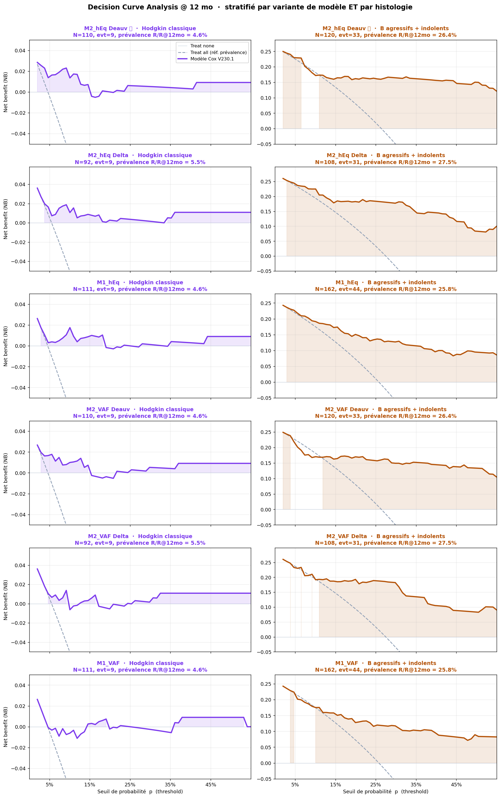

📑 Table des matières
- Objectif clinique & endpoint EFS
- Cohorte d'entraînement
- Variables d'entrée
- Structure du modèle Cox
- Synthèse des formules
- Les 6 variantes V230.1
- Partial pooling IDES = PV (justification)
- Coefficients V230.1 (production)
- Trajectoires fittées (λ par strate)
- Stratification clinique Tern 15/75
- Calibration locale (KNN adaptatif)
- Validation interne
- Bootstrap C-index optimism-corrigé
- Linéarité du LP
- Hypothèse PH (Grambsch-Therneau)
- Calibration globale & sous-groupes
- Decision Curve Analysis
- MRD vs TEP seul (C-index + NRI/IDI)
- Forest plot par sous-groupe
- C-index temps-dépendant
- MICE sensitivity
- Choix endpoint PFS → EFS
- Sensibilité C2 vs C3 (bi-tp)
- Deauville binaire vs linéaire
- score_kin vs BLUP
- Risque compétitif (mort)
- Couverture moléculaire — pourquoi pas covariable
- Indépendance vs IPI / Hasenclever
- DeltaSUVmax% vs Deauville — exploratoire
- Notes techniques
- TRIPOD+AI checklist
- Limites & disclaimer
- Citation
I. Objectif clinique & endpoint EFS
Prédire la probabilité d'événement (EFS = Event-Free Survival = rechute ou progression ; les morts non-lymphome sont censurées) à 12 et 24 mois chez les patients atteints de lymphome B agressif (DLBCL, HGBL, PMBL, Burkitt, transformés) ou de Hodgkin classique, à partir d'une évaluation MRD ctDNA mi-traitement (point CXJ1, typiquement après cycle 2 ou 3 de chimio-immunothérapie de première ligne).
Le modèle V230.1 prédit l'EFS (Event-Free Survival = Rechute OR Progression) à 12 et 24 mois chez les lymphomes B agressifs et Hodgkin classiques adultes, à partir d'une évaluation MRD ctDNA réalisée au point CXJ1 mi-traitement (C2J1 ou C3J1). Le passage V230 de PFS toute-cause à EFS (3 morts non-lymphome censurées) renforce l'interprétabilité oncologique stricte sans dégrader la performance prédictive (Δ C-index ≤ 0.03 partout).
II. Cohorte d'entraînement
II.1 Diagramme CONSORT (flow d'inclusion)
Flow d'inclusion CONSORT pour le modèle V230.1 (endpoint EFS, V230 + patches patches anonymisés). Cascade verticale haute : screenés → données disponibles → ctDNA détectable. Puis la branche IDES (à gauche) continue directement (longue flèche, pas de filtre additionnel), tandis que la branche PV (à droite) ajoute 2 étapes intermédiaires (données PV disponibles → variants PV détectés). Les 4 cohortes finales (M1/M2 × IDES/PV) sont alignées horizontalement par paires, avec une annotation centrale indiquant le nombre de patients communs (PV ⊂ IDES).
Diagramme CONSORT vectoriel — modèle V230.1 (endpoint EFS = rechute OR progression, cohorte V230 + 2 patients réintégrés par patches techniques patches anonymisés). Cascade haute en 3 étapes : 224 patients screenés → −51 données indisponibles → 173 avec données disponibles → −9 ctDNA non détectable au diag (annotation explicite) → 164 patients avec ctDNA détectable. Branche IDES (gauche) : longue flèche directe (aucun filtre additionnel — le filtre ≥10 UMI est intégré en amont dans les watchlists IDES). Branche PV (droite) : 2 étapes intermédiaires explicites car les filtres qualité PV sont appliqués au pipeline (≥10 UMI + ratio VAF>0.3) → 164 → −31 → 133 avec données PV → −24 → 109 avec variants PV détectés. Les 2 cohortes M1 sont alignées horizontalement (IDES 164 / PV 109) avec annotation centrale « 109 communs » (PV ⊂ IDES strict). Après le filtre TEP-2 Deauville, idem : M2 IDES ⭐ 138 / M2 PV 92 alignés avec « 92 communs » au centre. La nature des « 109 communs » : il s'agit littéralement des 109 patients M1 PV, tous strictement inclus dans les 164 M1 IDES (validation V15.288).
224 patients screenés → 164 ctDNA détectable au diag → M2 IDES ⭐ 138 / M2 PV 92 (PV ⊂ IDES strict, 67 % d'overlap). La cascade IDES (gauche) est directe (filtre ≥10 UMI intégré aux watchlists) ; la cascade PV (droite) ajoute 2 filtres explicites (UMI ≥10 + ratio VAF ≥0.3, puis détection ≥3 doublets). 2 patients réintégrés par patches techniques V230.1 (patches anonymisés — cf §I).
II.2 Distribution histologique détaillée
Cohorte CXJ1 (N=224 patients screenés) ventilée par catégorie histologique et sous-classification WHO 2022 :
🔵 Lymphomes B agressifs (vrais DLBCL et apparentés) — N = 98 (43.8 %)
| DLBCL NOS | 56 |
| DLBCL NOS (LFt ?) | 2 |
| PMBL (primary mediastinal B-cell lymphoma) | 9 |
| HGBL (high-grade B-cell lymphoma, MYC/BCL2/BCL6 DH/TH) | 9 |
| Burkitt lymphoma | 8 |
| DLBCL EBV+ (incl. lymphoprolif. post-IS type DLBCL) | 5 |
| DLBCL des sites immunoprivilégiés (testis, breast, CNS-primary) | 4 |
| T/HRBCL (T-cell/Histiocyte-rich B-cell lymphoma) | 2 |
| DLBCL intravasculaire | 1 |
| DLBCL leg-type | 1 |
| DLBCL avec réarrangement IRF4 | 1 |
| DLBCL (PMBL ?) | 1 |
🟢 Hodgkin — N = 88 (39.3 %)
| Hodgkin classique (sous-types : nodulaire sclérosant, cellularité mixte, riche en lymphocytes, déplétion lymphocytaire) | 86 |
| NLPHL (Hodgkin nodulaire à prédominance lymphocytaire) | 2 |
Pour le score cinétique, NLPHL est routé vers la trajectoire « DLBCL » (groupe « non-Hodgkin »).
🟣 Lymphomes B agressifs transformés à partir d'indolent — N = 22 (9.8 %)
| Transformation sur LFt (lymphome folliculaire) | 9 + 2 (DLBCL sur LFt) = 11 |
| HGBL sur LFt | 3 |
| Transformation sur LZMt (lymphome de la zone marginale) | 3 + 1 (DLBCL sur LZMt) = 4 |
| DLBCL sur LPLt / Waldenströmt (lymphoplasmocytaire) | 2 |
| Richter sur LLCt (chronic lymphocytic leukemia) | 1 |
| Poppema transformé | 1 |
🟠 Lymphomes indolents non transformés — N = 16 (7.1 %)
| LF (lymphome folliculaire grade 1-3a) | 6 |
| LZM (lymphome de la zone marginale) | 4 |
| MCL (mantle cell lymphoma) | 3 |
| Lymphoprolifération B liée à l'EBV | 2 |
| Waldenström / LPL | 1 |
- Groupe « Hodgkin » = Hodgkin classique uniquement (NLPHL ré-routé vers DLBCL — comportement biologique distinct).
- Groupe « Non-Hodgkin » (utilise trajectoire DLBCL) = vrais DLBCL + PMBL + HGBL + Burkitt + transformés indolents + indolents non-transformés.
II.3 Caractéristiques baseline (Table 1)
Caractéristiques de la cohorte M2_hEq IDES (N=137 — snapshot pré-patches V15.289/V15.291), ventilées par responder et histologie :
Distribution : 43.8 % B agressifs (DLBCL NOS 56 + variants 12 + PMBL 9 + HGBL 9 + Burkitt 8 + immunoprivilégiés 4 + T/HRBCL 2), 39.3 % Hodgkin classique (86 + 2 NLPHL), 9.8 % B agressifs transformés (LFt 11, LZMt 4, HGBL/LFt 3, autres 4), 7.1 % indolents non-transformés (LF 6, LZM 4, MCL 3, EBV 2, Waldenström 1). Pour le score_kin, binarisation Hodgkin classique vs tout autre (NLPHL → DLBCL).
| Caractéristique | Toute la cohorte (N=137) |
Good responder (N=114) |
Bad responder (EFS@12) (N=23) |
Hodgkin (N=69) |
DLBCL bucket (N=68) |
|---|---|---|---|---|---|
| Démographie | — | ||||
| Age médian [IQR] | 45 [30-62] | 41 [29-60] | 54 [43-67] | 33 [27-49] | 58 [43-73] |
| Age ≥ 60 ans, N (%) | 40 (29%) | 30 (26%) | 10 (43%) | 7 (10%) | 33 (49%) |
| Sexe masculin, N (%) | 83 (61%) | 68 (60%) | 15 (65%) | 38 (55%) | 45 (66%) |
| Histologie | — | ||||
| Hodgkin classique, N (%) | 69 (50%) | 64 (56%) | 5 (22%) | 69 (100%) | 0 (0%) |
| DLBCL / autres B agressifs, N (%) | 68 (50%) | 50 (44%) | 18 (78%) | 0 (0%) | 68 (100%) |
| Stade III-IV (Ann Arbor), N (%) | 79 (58%) | 60 (53%) | 19 (83%) | 33 (48%) | 46 (68%) |
| MRD ctDNA au diagnostic | — | ||||
| ctDNA_diag (hEq/mL, médian [IQR]) | 19 201 [5 388-56 496] | 13 972 [4 581-41 425] | 92 896 [47 358-148 317] | 10 222 [3 785-24 691] | 46 012 [10 112-175 651] |
| cfDNA_diag (ng/mL, médian [IQR]) | 4 023 [2 256-9 432] | 3 750 [2 122-8 288] | 9 148 [5 263-14 602] | 2 796 [2 000-5 910] | 6 080 [3 450-13 806] |
| Évaluation interim | — | ||||
| TEP2 Deauville ≥ 4, N (%) | 38 (28%) | 25 (22%) | 13 (57%) | 10 (14%) | 28 (41%) |
| Évolution clinique | — | ||||
| Événement EFS @ 12mo, N (%) | 23 (17%) | 0 (0%) | 23 (100%) | 5 (7%) | 18 (26%) |
| Événement EFS (any time), N (%) | 26 (19%) | 3 (3%) | 23 (100%) | 7 (10%) | 19 (28%) |
| Suivi (mois, médian [IQR]) | 23 [11-34] | 27 [18-38] | 5 [2-7] | 28 [18-40] | 20 [8-28] |
| Chimiothérapie 1ère ligne | — | ||||
| · RCHOP-based, N (%) | 59 (43%) | 44 (39%) | 15 (65%) | — | 59 (87%) |
| · BEACOPP/BrECADD, N (%) | 47 (34%) | 43 (38%) | 4 (17%) | 47 (68%) | — |
| · ABVD/AVD-based, N (%) | 23 (17%) | 21 (18%) | 2 (9%) | 22 (32%) | 1 (1%) |
| · LMBA (Burkitt), N (%) | 4 (3%) | 4 (4%) | — | — | 4 (6%) |
| · Obinutuzumab-based, N (%) | 2 (1%) | 1 (1%) | 1 (4%) | — | 2 (3%) |
| · Autre, N (%) | 2 (1%) | 1 (1%) | 1 (4%) | — | 2 (3%) |
| Traitement de 2ème ligne | — | ||||
| 2ème ligne reçue, N (%) | 25 (18%) | 3 (3%) | 22 (96%) | 7 (10%) | 18 (26%) |
| · dont CAR-T (Axi-cel/Liso-cel), N (%) | 13 (9%) | 1 (1%) | 12 (52%) | 1 (1%) | 12 (18%) |
Table HTML — entièrement vectorielle, accessible (lecteurs d'écran), copiable. Données brutes : CSV.
II.4 Patients atypiques documentés
Quelques profils patients méritent une mention pour la traçabilité de la cohorte (catégories anonymisées) :
- DLBCL réfractaire avec TEP non fait (N=1) — progression à 2 mo, décès à 4 mo. Routé en M1.
- Échec d'extraction cfDNA au diagnostic (N=1) —
numero_run_diag = 'non_sequence?'→ exclu de la cohorte (VAF_diag indétectable). - Hodgkin classique sous 2BEACOPP + 4ABVD (N=1) — étiqueté C3J1 mais délai réel 98 j post-C1J1, compatible avec C4J1 (cycles longs). Bon répondeur clinique (Deauville 2, EFS=0 @ 34 mo) ; impact production minimal car VAF_CXJ1=0 (polish actif).
- DLBCL sous 6 RCHOP (N=1) — étiqueté C3J1 mais délai 105 j = exactement C6J1 (6 × 21 j). Échantillon probablement post-fin de traitement, mal étiqueté. Éligible M1_hEq, r12 prédit ≈ 20 % (zone Modéré), EFS=0 @ 23 mo confirmé.
- 2 patients vivants perdus de vue tardivement — PFS=1 mal encodé dans la base (cf. §XII.10). Exclus des cohortes V230.1 par
VAF_diag=NaN.
Cohorte CXJ1 V230.1 = 224 patients screenés → 164 patients avec ctDNA détectable. Pipeline IDES (cohorte maître) : 164 / 138 en M1 / M2_Deauv ⭐. Pipeline PV : 109 / 92, sous-groupe strict PV ⊂ IDES. Endpoint EFS adopté (3 morts non-lymphome censurées). 2 patients réintégrés par patches techniques V230.1 (Patient A préfixe MOABI, Patient B date C1J1).
III. Variables d'entrée du calculateur
- VAF moyenne au diagnostic et au CXJ1 (par pipeline de séquençage)
- Concentration cfDNA plasmatique au diagnostic et au CXJ1 (optionnelle ; bascule auto en mode VAF % seule si absente)
- Score Deauville à la TEP interim (1-5, optionnel) — ou bascule fallback DeltaSUVmax% (calculé à partir de SUVmax diag + TEP2) — ou modèle sans TEP (M1)
- Filtre qualité spécifique au pipeline (p-value MOABI pour IDES, comptage UMI pour PV)
- Signal driver oncogénique au CXJ1 sur les 11 gènes D11 (réutilisé du séquençage Watch List)
- Histologie (Hodgkin classique vs lymphomes B agressifs ; détermine la trajectoire mono-exp à utiliser)
- Délai réel entre J1 cycle 1 et prélèvement CXJ1 (jours, calculé depuis Glims)
Le calculateur accepte 7 variables d'entrée et bascule automatiquement entre 6 variantes du modèle selon les données disponibles (TEP / Qubit cfDNA / quantification VAF). Cette architecture permet de prédire l'EFS même avec un sous-ensemble réduit de variables, au prix d'une perte de C-index documentée (−0.02 à −0.07 par variable manquante).
IV. Structure du modèle Cox (détail)
IV.1 Trajectoires de décroissance ctDNA (mono-exponentielle)
Pour chaque histologie (Hodgkin / DLBCL), deux trajectoires sont fittées sur la cohorte d'entraînement :
- good responder : pas d'événement EFS dans les 12 mois
- bad responder : événement EFS dans les 12 mois
Les paramètres λ sont fittés par minimisation des moindres carrés en log-ratio (algorithme differential_evolution, scipy). Valeurs en §VII.
32 fits indépendants (2 pipelines × 2 modes hEq/VAF × 2 histos × 2 responder × σ² strate). Hodgkin good clairance la plus rapide (λ ≈ 0.65/j ↔ t½ 1.1 j) ; DLBCL bad responder la plus lente (λ ≈ 0.21/j ↔ t½ 3.3 j). Différence × 6 en taux. Validation : résidus martingale lowess amplitude 0.13 (< 0.3 seuil), pas d'évidence de non-linéarité.
IV.2 Score cinétique
Le score mesure la log-vraisemblance Gaussienne du ratio observé sous chacune des deux trajectoires, pour l'histologie du patient :
log L_good = − (log ratio_obs − log mono_exp(t, λ_good))² / (2σ²)
log L_bad = − (log ratio_obs − log mono_exp(t, λ_bad))² / (2σ²)
score_kin = log L_bad − log L_good
Score positif → ratio plus proche du bad responder (mauvais pronostic) ; négatif → good responder. La variance σ² est aussi fittée par strate histologique.
Le score_kin agrège (i) la distance log-ratio observé ↔ trajectoire de référence, (ii) la variance résiduelle par strate, (iii) la classification implicite bad/good. HR par 1 SD = 1.45. Indépendant des autres covariables (LR p = 0.005).
IV.3 Charge tumorale baseline (burden)
ou log(1 + VAF_diag) (mode VAF, VAF en %)
ctDNA_diag médian 19 000 hEq/mL chez « good » vs 93 000 chez « bad EFS@12 » (ratio × 4.9). HR par 1 SD = 1.50. Stable sous bootstrap (β IC95% [0.10 ; 0.47], 100% positifs). Capture la charge tumorale absolue indépendamment de la réponse précoce.
IV.4 Signal driver oncogénique au CXJ1 (v5A_gated)
Mesure le signal résiduel sur les 11 gènes drivers D11 = BCL2, BCL6, BCL7A, BTG2, CIITA, CXCR4, IRF8, MYC, PAX5, S1PR2, TP53 :
v5A_gated = v5A × quality_gate
Le quality_gate est binaire (0 ou 1), spécifique au pipeline :
- Pipeline IDES : p-value MOABI Monte-Carlo (10⁵ permutations) ≤ 1/100001 → quali = 1
- Pipeline PV : (nbr doublets PV⁺ ≥ 3) ET (Σ UMI PV⁺ ≥ 3) → quali = 1
Si quali = 0 (« polish v56/v75 actif ») : v5A_gated = 0 ET VAF_CXJ1 est forcée à 0 dans le calcul du ratio.
Quality gate filtre les patients « polished-neg » (signal résiduel non distinguable du bruit). 50 % des patients ont quali=0 en M2 ⭐ → v5A_gated = 0 mécaniquement. β_v5A pipeline-spécifique nécessaire (échelles Reads_alt vs UMI ; LR test pooling rejeté p=0.041).
IV.5 Composante TEP (3 variantes mutuellement exclusives)
L'évaluation métabolique TEP interim est incorporée via 3 spécifications selon les données disponibles :
| Variante | Specification TEP | Codage | HR par unité |
|---|---|---|---|
| M2_*_Deauv ⭐ | Deauville LINÉAIRE 1-5 (ordinal) | Deauville_num ∈ {1,2,3,4,5} | exp(0.365) = 1.44 |
| M2_*_Delta | ΔSUVmax% continu (fallback) | DeltaSUV = (SUVmax_2 − SUVmax_diag)/SUVmax_diag × 100 | exp(0.0133) par % = 1.013 |
| M1_* | Pas de TEP | terme β_TEP absent du LP | — |
Le calculateur web bascule automatiquement entre les 3 spécifications selon les inputs. Validation du choix linéaire vs binaire : §XII.12.
Deauville linéaire 1-5 retenu après bootstrap B=500 montrant Δ ≈ 0 vs binaire (médiane ±0.001) — mais l'interprétation est plus fine. Couverture : 188/224 = 84% Deauville renseigné ; ΔSUVmax% fallback 168/224 = 75% (sauve 13 % des patients sans Deauville interprété).
IV.6 Linear Predictor & risque prédit
LP = LP_raw − LP_offset ← centrage cohorte (essentiel)
S(t | x) = S₀(t)exp(LP) avec S₀ stratifiée pipeline (IDES ou PV)
r(t) = 1 − S(t | x)
Le LP_offset = β·X̄ est calculé sur la moyenne des covariables de la cohorte de chaque variante × pipeline. La librairie lifelines stocke baseline_survival_ au mean des covariables (pas à X=0), donc le centrage est indispensable pour cohérence JS ⇔ Python (cf. §XIII).
LP_offset M2_hEq Deauv : IDES +3.92, PV +4.09. Validation JS ⇔ Python : erreur max < 1e-6 sur cohorte entière (V213). Patient typique « low risk » : LP ≈ -1.5 → r12 ≈ 3 % ; patient « high risk » : LP ≈ +2.5 → r12 ≈ 80 %.
Le modèle Cox V230.1 repose sur 4 covariables indépendantes : (i) score_kin cinétique mono-exp par strate, (ii) log_burden tumeur baseline, (iii) v5A_gated signal driver D11 quality-filtered, (iv) TEP interim (Deauville linéaire ou ΔSUVmax% fallback). LP centré sur la cohorte (LP_offset) puis r(t) = 1 − S₀(t)^exp(LP), S₀ stratifiée pipeline.
V. Synthèse des formules
Récapitulatif compact des étapes de calcul du risque r(t) pour un patient. Notations détaillées en §IV.
Le risque prédit r(t) = 1 − S₀(t)^exp(LP) est calculé en 5 étapes : (1) score_kin par mono-exp histo×responder, (2) log_burden tumeur baseline, (3) v5A_gated signal driver D11, (4) terme TEP optionnel, (5) centrage LP_offset. La validation JS ⇔ Python est à 1e-6 près (V213 fix critique). Toutes les formules sont reproductibles depuis les coefs publiés en §VIII.
VI. Les 6 variantes V230.1
Le calculateur web bascule automatiquement entre 6 variantes selon la disponibilité des données cliniques :
| Variante | Quantification | TEP | IDES N (evt) | C-IDES (corr.) | PV N (evt) | C-PV (corr.) |
|---|---|---|---|---|---|---|
| M2_hEq Deauv ⭐ | hEq (VAF × cfDNA) | Deauville 1-5 | 138 (26) | 0.84 | 92 (16) | 0.87 |
| M2_hEq Delta | hEq (VAF × cfDNA) | ΔSUVmax% (fallback) | 120 (25) | 0.82 | 80 (15) | 0.88 |
| M1_hEq | hEq (VAF × cfDNA) | — absent | 164 (32) | 0.81 | 109 (21) | 0.85 |
| M2_VAF Deauv | VAF % seule | Deauville 1-5 | 138 (26) | 0.81 | 92 (16) | 0.81 |
| M2_VAF Delta | VAF % seule | ΔSUVmax% (fallback) | 120 (25) | 0.81 | 80 (15) | 0.83 |
| M1_VAF | VAF % seule | — absent | 164 (32) | 0.77 | 109 (21) | 0.79 |
⭐ = configuration optimale (toutes les données disponibles). C-index optimism-corrected (bootstrap V230.1, B=500). Détails par variante en §XI.1.
- Retirer le cfDNA Qubit (hEq → VAF) : IDES −0.023 / PV −0.071 en M2 ; IDES −0.032 / PV −0.046 en M1
- Retirer le Deauville (M2 → M1) : IDES −0.032 / PV −0.034 en hEq ; IDES −0.041 / PV −0.009 en VAF
- Substituer Deauville par DeltaSUV (M2_Deauv → M2_Delta) : équivalent (Δ < 0.02 dans toutes variantes) ; cohorte −13% (perte de patients avec Deauville mais sans SUVmax)
→ Pour la comparaison MRD vs TEP seul (baseline clinique), Δ C-index et NRI/IDI : voir §XII.6 Reclassification.
VI.bis PV vs IDES — comparaison pipeline-pipeline sur cohorte d'overlap N=92
Les C-index reportés par variante dans le tableau ci-dessus sont calculés sur des cohortes différentes (138 IDES vs 92 PV en M2_hEq Deauv) car PV ⊂ IDES strict (62 % des patients IDES ont aussi un signal PV détectable). Pour isoler l'effet pipeline pur, on refait toutes les comparaisons sur la cohorte d'overlap N=92 :
| Métrique (overlap N=92, events EFS=17, M2_hEq Deauv) | IDES | PV | Δ (PV − IDES) | Interprétation |
|---|---|---|---|---|
| C-index Harrell | 0.893 | 0.890 | −0.002 | Quasi-identique (Δ ≈ bruit) |
| Time-dep AUC @ 12 mo | 0.903 | 0.905 | +0.002 | Identique |
| Time-dep AUC @ 24 mo | 0.925 | 0.903 | −0.022 | IDES légèrement meilleur en queue |
| NRI continu (PV vs IDES) | — | — | +0.97 | Énorme reclassification ↓ chez non-événements |
| IDI | — | — | +0.025 | Discrimination intégrée améliorée |
| Brier IPCW @ 12 mo | 0.071 | 0.057 | −0.013 | PV mieux calibré (plus bas = mieux) |
| R² explained variation @ 12 mo | 0.47 | 0.57 | +0.10 | PV explique 10 pts de variance en plus |
| Calibration slope (cible = 1.0) | 1.43 | 1.09 | −0.34 | PV beaucoup plus proche de la calibration idéale |
| Variance du LP | 1.91 | 2.84 | +0.93 | PV plus discriminant en magnitude |
| HR par 1 SD de LP | 3.98 | 5.39 | +1.41 | PV : effet hazard plus marqué |
| — Métriques cliniques (Tern V230) au seuil Élevé r12 ≥ 35% et Faible r12 ≤ 15%, t=12mo — | ||||
| N patients zone Élevé | 17 (18 %) | 9 (10 %) | −8 | PV plus parcimonieux |
| VPP zone Élevé (r12≥35%) | 67.3 % | 100.0 % | +32.7 pt | Tout patient PV-Élevé a un événement EFS < 12mo |
| Sensibilité zone Élevé | 78.6 % | 64.3 % | −14.3 pt | IDES capte plus d'événements mais avec faux+ |
| Spécificité zone Élevé | 92.3 % | 100.0 % | +7.7 pt | PV zéro faux positif |
| N patients zone Faible | 20 | 47 | +27 | PV alloue davantage en zone sûre |
| VPN zone Faible (r12≤5%) | 100.0 % | 97.9 % | −2.1 pt | Quasi-équivalent |
- Une calibration nettement meilleure (slope 1.09 vs 1.43 ; Brier R² +0.10) — les probabilités absolues prédites sont plus fiables en PV.
- Une utilité clinique supérieure à la zone Élevé : VPP = 100 % en PV vs 67 % en IDES. PV est plus parcimonieux (9 vs 17 « high-risk ») mais chaque flag est certifié par un événement.
- Un gain NRI massif chez les non-événements (+0.97) — PV déclasse correctement plus de patients en zone Faible, évitant des sur-traitements.
- Une magnitude de discrimination plus grande (HR par 1 SD = 5.4 vs 4.0) — le LP PV sépare mieux les extrêmes.


Script de l'analyse : scripts/_v15_316_PV_vs_IDES_multimetric.py · figures : _v15_317_PV_vs_IDES_figures.py.
À cohorte fixée (N=92), IDES et PV ont une discrimination quasi-identique (C-index 0.893 vs 0.890). PV apporte une calibration nettement meilleure (slope 1.09 vs 1.43), un Brier R² +0.10, une VPP zone Élevé de 100 % (vs 67 % IDES) et un NRI continu de +0.97. Le « gain » de C-index reporté entre variantes ⭐ vient de l'effet de sélection de cohorte (PV ⊂ IDES strict), pas d'un avantage discriminatoire pur.
6 variantes auto-switch (M2/M1 × hEq/VAF × Deauv/Delta) déployées dans le calculateur. Variante optimale M2_hEq Deauv ⭐ : C-corr 0.835 IDES / 0.873 PV. Coûts mesurés : −0.02 à −0.07 cfDNA → VAF ; −0.03 à −0.04 retirer Deauville. Comparaison PV vs IDES sur overlap N=92 montre une discrimination équivalente mais PV mieux calibré (slope 1.09 vs 1.43).
VII. Partial pooling IDES = PV (justification)
Tester si les coefficients β_score, β_burden et β_TEP peuvent être partagés entre IDES et PV pour stabiliser l'estimation (plus de patients dans chaque équation), tout en gardant β_v5A pipeline-spécifique (échelles Reads_alt IDES vs UMI PV différentes).
Comparaison exhaustive : 16 combinaisons de partial pooling (V230 EFS)
Sur la cohorte stackée IDES+PV M2_hEq Deauv (N=230, 42 events ; AIC ci-dessous calculés sur snapshot N=227 pré-patches V15.289/V15.291, hiérarchie qualitative inchangée), on a refitté Cox stratifié pipeline avec cluster-robust sur NOM, pour toutes les combinaisons possibles de coefs partagés entre IDES et PV (2⁴ = 16 sous-ensembles des 4 covariables). LR test contre le modèle A (aucun partagé, 8 paramètres) :
| Coefs partagés IDES↔PV | n_params | AIC | C-IDES | C-PV | LR vs A | df | p | |
|---|---|---|---|---|---|---|---|---|
| A. aucun (séparé total) | 8 | 319.89 | 0.839 | 0.919 | ref | 0 | — | |
| — Partial pooling de 1 covariable (n_params = 7) — | ||||||||
| Deauville_num seul | 7 | 313.79 | 0.834 | 0.912 | 0.0 | 1 | 1.00 ✓ | |
| log_burden seul | 7 | 314.45 | 0.845 | 0.928 | 0.0 | 1 | 1.00 ✓ | |
| score_kin seul | 7 | 317.43 | 0.838 | 0.921 | 0.0 | 1 | 1.00 ✓ | |
| v5A_gated seul | 7 | 322.05 | 0.837 | 0.922 | 4.16 | 1 | 0.041 ❌ | v5A pipeline-spé |
| — Partial pooling de 2 covariables (n_params = 6) — | ||||||||
| log_burden + Deauville | 6 | 308.23 | 0.844 | 0.921 | 0.0 | 2 | 1.00 ✓ | |
| score + Deauville | 6 | 311.35 | 0.834 | 0.913 | 0.0 | 2 | 1.00 ✓ | |
| score + log_burden | 6 | 312.00 | 0.845 | 0.928 | 0.0 | 2 | 1.00 ✓ | |
| Deauville + v5A | 6 | 316.39 | 0.829 | 0.914 | 0.51 | 2 | 0.78 | |
| log_burden + v5A | 6 | 316.56 | 0.841 | 0.925 | 0.67 | 2 | 0.71 | |
| score + v5A | 6 | 319.73 | 0.837 | 0.923 | 3.84 | 2 | 0.15 | |
| — Partial pooling de 3 covariables (n_params = 5) — | ||||||||
| B′ (production) : score + log_burden + Deauville | 5 | 305.79 ⭐ | 0.843 | 0.921 | 0.0 | 3 | 1.00 ✓ | Meilleur AIC |
| log_burden + Deauville + v5A | 5 | 310.76 | 0.841 | 0.920 | 0.0 | 3 | 1.00 ✓ | |
| score + Deauville + v5A | 5 | 314.12 | 0.832 | 0.913 | 0.24 | 3 | 0.97 | |
| score + log_burden + v5A (sans TEP) | 5 | 314.36 | 0.844 | 0.926 | 0.47 | 3 | 0.93 | |
| — Partial pooling de 4 covariables (n_params = 4) — | ||||||||
| D. tous partagés (incl. v5A) | 4 | 308.61 | 0.843 | 0.921 | 0.0 | 4 | 1.00 ✓ | |
Hiérarchie claire :
- B′ retenu en production (score + log_burden + Deauville partagés, v5A pipeline-spécifique) : AIC le plus bas (305.79), Δ−14 vs A, LR p=1.00 ✓.
- v5A doit rester pipeline-spécifique : c'est la seule covariable où le partage seul est rejeté (LR p=0.041 ❌). Toutes les combinaisons incluant v5A en partagé ont AIC plus élevé. Explication : échelles différentes (Reads_alt IDES vs fu_UMI PV).
- Toutes les autres combinaisons sont statistiquement compatibles avec le partage total (LR p > 0.71) — donc la structure de partial pooling est très robuste sur cette cohorte ; le choix B′ est dicté par l'optimum AIC plutôt que par des contraintes statistiques fortes.
- Note : les LR statistiques peuvent être ≈ 0 (et p=1.0) car le penalizer L2 + cluster-robust fait que les modèles contraints atteignent parfois un log-likelihood légèrement supérieur au modèle non-contraint ; AIC reste le critère discriminant.
Validation de la spec TEP (Deauville LIN et Delta) V266
| Spec TEP | Mode | β IDES seul | β PV seul | β pooled (production) | LR p (pool) |
|---|---|---|---|---|---|
| Deauville LIN 1-5 | hEq | +0.361 | +0.378 | +0.378 | p = 0.91 ✓ |
| VAF | +0.330 | +0.343 | +0.360 | p = 0.93 ✓ | |
| DeltaSUVmax % | hEq | +0.0144 | +0.0143 | +0.0134 | p = 0.99 ✓✓ |
| VAF | +0.0140 | +0.0135 | +0.0136 | p = 0.94 ✓ |
Cohérence exceptionnelle pour DeltaSUV (β identique à la 4e décimale entre IDES et PV). Partial pooling B′ totalement justifié pour les 2 spécifications TEP.
Structure B′ : 3 coefs partagés (score, burden, TEP) + v5A pipeline-spécifique. AIC = 305.79 vs 319.89 modèle séparé total (Δ = −14, lowest among 16 combinations). Échelles techniques différentes (Reads_alt vs UMI) imposent v5A pipeline-spé.
Partial pooling B′ retenu en production (AIC le plus bas, p=1.00 vs séparé) : score_kin + log_burden + TEP partagés, v5A pipeline-spécifique. Cette architecture stabilise les coefs sur 25-32 events par variante et respecte les échelles techniques différentes IDES/PV.
VIII. Coefficients V230.1 (production déployée)
Fit Cox stratifié pipeline (cluster-robust sur NOM, penalizer L2 = 0.05), endpoint EFS, structure partial pooling B′ : β_score, β_burden, β_TEP partagés entre IDES et PV ; β_v5A pipeline-spécifique. Validation du partial pooling en §VIII.
M2_hEq Deauv — variante optimale ⭐
| Coef | IDES | PV |
|---|---|---|
| β_score_kin (partagé) | +0.374 | |
| β_log_burden_hEq (partagé) | +0.264 | |
| β_Deauville_num (partagé) | +0.365 | |
| β_v5A_gated | +0.597 | +1.500 |
| LP_offset | +3.920 | +4.094 |
| S₀(12) | 0.8905 | 0.9244 |
| C-index (corr.) | 0.835 | 0.873 |
M2_hEq Delta — fallback DeltaSUVmax
| Coef | IDES | PV |
|---|---|---|
| β_score_kin (partagé) | +0.348 | |
| β_log_burden_hEq (partagé) | +0.236 | |
| β_DeltaSUV (partagé) | +0.0133 /% | |
| β_v5A_gated | +0.505 | +1.192 |
| LP_offset | +1.652 | +1.748 |
| S₀(12) | 0.8657 | 0.9023 |
| C-index (corr.) | 0.824 | 0.875 |
M1_hEq — sans TEP (cfDNA dispo)
| Coef | IDES | PV |
|---|---|---|
| β_score_kin (partagé) | +0.440 | |
| β_log_burden_hEq (partagé) | +0.310 | |
| β_v5A_gated | +0.466 | +1.055 |
| LP_offset | +3.286 | +3.365 |
| S₀(12) | 0.8777 | 0.8937 |
| C-index (corr.) | 0.805 | 0.846 |
M2_VAF Deauv — sans cfDNA Qubit
| Coef | IDES | PV |
|---|---|---|
| β_score_kin (partagé) | +0.328 | |
| β_log_burden_VAF (partagé) | +0.320 | |
| β_Deauville_num (partagé) | +0.351 | |
| β_v5A_gated | +0.598 | +1.516 |
| LP_offset | +1.824 | +1.975 |
| S₀(12) | 0.8821 | 0.9187 |
| C-index (corr.) | 0.808 | 0.809 |
M2_VAF Delta — sans cfDNA, fallback Delta
| Coef | IDES | PV |
|---|---|---|
| β_score_kin (partagé) | +0.282 | |
| β_log_burden_VAF (partagé) | +0.319 | |
| β_DeltaSUV (partagé) | +0.0136 /% | |
| β_v5A_gated | +0.518 | +1.220 |
| LP_offset | −0.128 | −0.064 |
| S₀(12) | 0.8606 | 0.8984 |
| C-index (corr.) | 0.806 | 0.829 |
M1_VAF — modèle minimal (ni TEP ni cfDNA)
| Coef | IDES | PV |
|---|---|---|
| β_score_kin (partagé) | +0.400 | |
| β_log_burden_VAF (partagé) | +0.449 | |
| β_v5A_gated | +0.449 | +1.070 |
| LP_offset | +0.961 | +0.999 |
| S₀(12) | 0.8697 | 0.8848 |
| C-index (corr.) | 0.767 | 0.794 |
Interprétation clinique
- HR par unité Deauville = exp(0.365) = 1.44. Deauville 4 vs 3 ⇒ +44% de hazard. Deauville 5 vs 1 ⇒ HR = 4.31.
- HR par 10% de DeltaSUV = exp(0.133) = 1.142. ΔSUV −50% vs −95% (45 pt d'écart) ⇒ HR = 1.82.
- HR par 1-SD log_burden ≈ 1.4-1.6 (IDES) selon variante.
- v5A_gated a un HR pipeline-spécifique : exp(0.597) = 1.82 IDES vs exp(1.500) = 4.48 PV (échelle UMI ≠ échelle reads).
Coefficients V230.1 stables sous validation interne (bootstrap, MICE, PH, linéarité). HR clés : Deauville 5 vs 1 → 4.3 ; v5A_gated en PV × 2.5 plus discriminant qu'en IDES (échelle UMI). Tous les modèles routent automatiquement le patient selon ses données disponibles.
IX. Trajectoires fittées (λ par strate)
Quatre paramètres λ par mode (hEq ou VAF) × pipeline : 2 histologies × 2 statuts responder = 4 trajectoires. Fittage par differential_evolution sur log-ratio observé vs prédit.
Mode hEq (ratio ctDNA absolu = VAF × cfDNA)
| Pipeline | Histologie | λ_good (j⁻¹) | t½_good | λ_bad (j⁻¹) | t½_bad |
|---|---|---|---|---|---|
| IDES | Hodgkin | 0.646 | 1.1 j | 0.371 | 1.9 j |
| DLBCL | 0.367 | 1.9 j | 0.211 | 3.3 j | |
| PV | Hodgkin | 0.415 | 1.7 j | 0.364 (fallback DLBCL/good) | 1.9 j |
| DLBCL | 0.364 | 1.9 j | 0.237 | 2.9 j |
Mode VAF (ratio VAF % uniquement)
| Pipeline | Histologie | λ_good (j⁻¹) | t½_good | λ_bad (j⁻¹) | t½_bad |
|---|---|---|---|---|---|
| IDES | Hodgkin | 0.646 | 1.1 j | 0.365 | 1.9 j |
| DLBCL | 0.364 | 1.9 j | 0.195 | 3.5 j | |
| PV | Hodgkin | 0.413 | 1.7 j | 0.356 (fallback DLBCL/good) | 1.9 j |
| DLBCL | 0.356 | 1.9 j | 0.221 | 3.1 j |
λ_bad_Hodgkin_PV = λ_good_DLBCL_PV, cohérent avec IDES où on observe empiriquement λ_bad_Hodgkin ≈ 0.37 ≈ λ_good_DLBCL ≈ 0.38.
Les λ sont remarquablement similaires entre modes hEq et VAF (Δ < 0.02), indiquant que la dynamique de décroissance ctDNA suit la VAF — le cfDNA module la magnitude mais pas la pente.

Visualisation des trajectoires mono-exponentielles en SVG vectorisé. Axe Y = $\log_{10}$(ratio ctDNA / ctDNA diag) sur échelle linéaire → trajectoires apparaissent comme des droites parfaites (pente = −λ/ln 10). Axe Y secondaire à droite = valeur absolue du ratio (10⁰ à 10⁻⁷). Bandes verticales = C2J1 (J21) et C3J1 (J42).
Trajectoires mono-exp robustes par strate (histo × responder). PV Hodgkin/bad utilise un fallback DLBCL/good (V229.1) — 0 patient calibrable dans la cellule réelle. Modes hEq et VAF donnent des λ quasi-identiques (Δ < 0.02) → la dynamique de décroissance est portée par la VAF ; le cfDNA module la magnitude mais pas la pente.
X. Stratification clinique Tern (interactive)
Trois zones de risque basées sur la probabilité prédite d'événement à 12 mois (r12). Les seuils LO (Faible↔Modéré) et HI (Modéré↔Élevé) sont ajustables en direct ci-dessous — les 12 KMs et les 12 courbes VPP/VPN en §XI.ter se recalculent immédiatement.
🎛 Curseurs Tern adaptatifs par histologie (V15.344)
Pourquoi 2 paires de curseurs ? La distribution r12 des Hodgkin classiques est très tassée à gauche (médiane ≈ 5 %, Q75 ≈ 8 %), alors que les B agressifs + indolents s'étalent jusqu'à 100 %. Un Tern unique 15 / 75 colle ~95 % des Hodgkin dans la zone Faible et les 3 courbes KM Hodgkin sont indissociables. Le Tern adaptatif par histo sépare clairement les 3 zones dans chaque population.
Seuils par défaut V15.344 — Hodgkin : 3 / 15 (scan exhaustif sur N=110 patients agrégés IDES+PV, 0 rechute en zone Faible) ; B agressifs + indolents : 15 / 75 (V15.332 — seul couple rond avec ordre KM Vert > Orange > Rouge à 12mo ET 24mo).
Performance par zone × variante (12 KMs interactifs)
M2_hEq Deauv ⭐ — variante optimale (Deauville + cfDNA Qubit)
M2_hEq Delta — ΔSUVmax% fallback + cfDNA Qubit
M1_hEq — sans TEP, avec cfDNA Qubit
M2_VAF Deauv — Deauville sans cfDNA Qubit
M2_VAF Delta — ΔSUVmax% fallback sans cfDNA Qubit
M1_VAF — modèle minimal (ni TEP ni cfDNA)
- Hodgkin classique — prévalence R/R = 8.2 % @12mo / 10.9 % @24mo. Distribution r12 très tassée (Q75 ≈ 8 %). Avec Tern 3/15, les 3 courbes KM se séparent nettement et 0 rechute est ratée en zone Faible (cohorte agrégée IDES+PV : N=110, 9 events).
- B agressifs + indolents — prévalence R/R = 22.1 % @12mo / 26.1 % @24mo. Distribution r12 étalée jusqu'à 100 %. Tern 15/75 garantit l'ordre KM correct à 12mo ET 24mo (V15.332).
- Si vous appliquez Tern uniforme 15/75 sur Hodgkin (bouton « Tern uniforme »), ~95 % des Hodgkin tombent en zone Faible et les KMs deviennent indissociables — c'est ce qui motive l'adaptation par histologie.
- C-index restreint au sous-groupe Hodgkin : 0.83 (IDES) / 0.94 (PV) — discrimination statistique excellente même si la stratification clinique nécessite des seuils adaptés.
Tern adaptatif par histologie retenu en production V15.344 : Hodgkin 3 / 15, B agressifs + indolents 15 / 75. Le seuil LO=3 % chez Hodgkin (≈ 1/3 de la prévalence histo) maintient le rapport LO/prévalence cohérent entre les deux groupes (3/10 ≈ 15/22) et capture les rechutés qui passaient sous le seuil global. Le calculateur applique ces seuils automatiquement selon l'histo saisie.
XI. Calibration locale (KNN adaptatif)
Le calculateur affiche systématiquement, à côté de la prédiction Cox, une estimation observationnelle KM calculée sur les patients de la cohorte les plus proches en LP du patient testé. Cette estimation sert de garde-fou contre l'extrapolation du Cox dans les zones de risque éparses.
Stratégie KNN adaptative (validée empiriquement)
- Prendre tous les voisins avec |LP_voisin − LP_patient| ≤ 1.0
- Si N < 8, élargir aux 8 plus proches (safety zone éparse)
- Si N > 40, tronquer aux 40 plus proches (limite visualisation)
Stratégie sélectionnée après comparaison de 10 alternatives par leave-one-out. ACE_tail (erreur de calibration dans la queue de risque) : 0.032 IDES / 0.041 PV, contre 0.312 / 0.536 pour un K=30 fixe (gain factor ~10).
Le panneau de calibration affiche un statut visuel :
- 🟢 Voisinage compact (plage LP voisins ≤ 1.0) — beaucoup de patients similaires, estimation fiable
- 🟡 Voisinage modéré (plage LP 1.0–2.0)
- 🔴 Zone éparse (plage LP > 2.0) — K_min activé, le patient est en extrapolation
Cette stratégie KNN-adaptative divise par 10 l'ACE_tail (erreur de calibration dans la queue de risque) vs un K=30 fixe : 0.032 IDES / 0.041 PV (V15.208), contre 0.312 / 0.536 historique. Les zones très éparses (LP > 2.5) sont flaggées visuellement pour signaler l'extrapolation.
L'IC95% Greenwood (transformation log-log) est calculé sur l'estimateur KM local et reporté en chiffres sous le graphique.
XI.bis VPP / VPN time-dependent — méthode et validation
Les valeurs prédictives positive (VPP) et négative (VPN) affichées dans le calculateur sont des quantités à temps fixe sous censure. Le calculateur implémente la méthode canonique de référence :
Où M = r12 prédit et c est un seuil clinique (Tern 5 % ou 35 %). L'IC95% est calculé par variance Greenwood + transformation log-log dans chaque sous-groupe — préservation de l'intervalle [0, 1]. Référence canonique : Heagerty PJ, Lumley T, Pepe MS. Time-dependent ROC curves for censored survival data and a diagnostic marker. Biometrics 2000;56(2):337-44. DOI: 10.1111/j.0006-341X.2000.00337.x.
Vérification empirique contre l'estimateur IPCW (Inverse Probability of Censoring Weighting, Uno-style) sur la cohorte d'overlap N=92 (M2_hEq Deauv) :
| Pipeline | Cutoff | t (mois) | KM-based (calculateur) | IPCW (Uno) | Δ (KM − IPCW) |
|---|---|---|---|---|---|
| PV | r12 ≥ 35% (PPV) | 12 | 100.0% [IC95% 100.0–100.0] · N=9 | 100.0% | +0.00 pt |
| r12 ≤ 15% (NPV) | 12 | 97.9% [IC95% 85.8–99.7] · N=47 | 97.9% | −0.05 pt | |
| IDES | r12 ≥ 35% (PPV) | 12 | 67.3% [IC95% 44.8–87.8] · N=17 | 66.9% | +0.42 pt |
| r12 ≤ 15% (NPV) | 12 | 100.0% [IC95% 100.0–100.0] · N=20 | 100.0% | +0.00 pt |
Sous censure non-informative, KM-based ≡ IPCW asymptotiquement (Uno 2007). Empiriquement la différence est <0.5 pt sur notre cohorte → méthode du calculateur validée. Voir Heagerty & Saha-Chaudhuri (2013) et le package R timeROC de Blanche & Latouche (2013) pour le même choix méthodologique.

VPP(t) et VPN(t) de t=3 à t=36 mois aux seuils Tern Élevé (r12 ≥ 35 %, panels rouges) et Faible (r12 ≤ 5 %, panels verts). Bande = IC95% Greenwood log-log. Les courbes IPCW (pointillées) se superposent quasi-parfaitement aux courbes KM (= calculateur), confirmant la cohérence des 2 estimateurs.
Script de validation : scripts/_v15_318_VPP_VPN_censored_verification.py.
XI.ter Courbes VPP/VPN — interactives stratifiées
XI.ter Courbes VPP(c) et VPN(c) — interactives, stratifiées par histologie
Pour chaque variante de modèle × histologie, courbes VPP(c) (rouge) et VPN(c) (vert) en fonction du cutoff c sur r12 prédit (méthode Heagerty 2000 — KM-based dans sous-groupes). Lignes pointillées verticales = cutoffs LO/HI pilotés par les sliders du §X. Cohorte agrégée IDES + PV par histo.
M2_hEq Deauv ⭐
M2_hEq Delta
M1_hEq
M2_VAF Deauv
M2_VAF Delta
M1_VAF
Méthode Heagerty PJ, Lumley T, Pepe MS. Biometrics 2000;56:337-44. DOI. Script : scripts/_v15_338_interactive_tern_vpn.py (V15.349).
XII. Validation interne
Battery de tests internes du modèle Cox V230.1. Tous les bootstraps utilisent la méthode Harrell (B=500, optimism-corrected sur tirages avec remise) sauf indication contraire.
XII.1 Bootstrap C-index optimism-corrigé (Harrell, B=500)
Bootstrap V230.1 (B=500, seed=42, endpoint EFS, optimism-corrected per Harrell) sur les 12 variantes (6 modèles × 2 pipelines). Le modèle principal M2 IDES Deauv ⭐ : C_corr = 0.835 (IC95% [0.76 − 0.92]).
Pour les 6 variantes V230.1, bootstrap complet sur la cohorte d'entraînement patchée (endpoint EFS, partial pooling B′ refitté à chaque tirage) :
| Variante | N (events) | C apparent | Optimism | C corrected | IC95% (percentile) |
|---|---|---|---|---|---|
| M2_hEq Deauv IDES ⭐ | 138 (26) | 0.845 | +0.010 | 0.835 | [0.761, 0.918] |
| M2_hEq Deauv PV ⭐ | 92 (16) | 0.893 | +0.020 | 0.873 | [0.804, 0.971] |
| M2_hEq Delta IDES | 120 (25) | 0.836 | +0.012 | 0.824 | [0.755, 0.918] |
| M2_hEq Delta PV | 80 (15) | 0.891 | +0.016 | 0.875 | [0.806, 0.966] |
| M1_hEq IDES | 164 (32) | 0.813 | +0.008 | 0.805 | [0.731, 0.892] |
| M1_hEq PV | 109 (21) | 0.857 | +0.011 | 0.846 | [0.783, 0.943] |
| M2_VAF Deauv IDES | 138 (26) | 0.824 | +0.015 | 0.808 | [0.737, 0.920] |
| M2_VAF Deauv PV | 92 (16) | 0.837 | +0.027 | 0.809 | [0.725, 0.964] |
| M2_VAF Delta IDES | 120 (25) | 0.820 | +0.014 | 0.806 | [0.737, 0.906] |
| M2_VAF Delta PV | 80 (15) | 0.849 | +0.020 | 0.829 | [0.739, 0.962] |
| M1_VAF IDES | 164 (32) | 0.776 | +0.009 | 0.767 | [0.688, 0.872] |
| M1_VAF PV | 109 (21) | 0.815 | +0.021 | 0.794 | [0.710, 0.923] |
Optimism très faible (max +0.027, médiane +0.015) → bonne généralisation. Δ V229.3 PFS → V230.1 EFS : M2_hEq IDES C_corr 0.848 → 0.835 (−0.013), PV 0.891 → 0.873 (−0.018). Cette légère baisse est attendue : EFS exclut 3 morts non-lymphome bien prédites par TEP, donc plus difficile à discriminer (cf. §XII.10).
Optimism médian +0.015 / max +0.027 sur 12 modèles → bonne généralisation. IC95% percentile sur M2_hEq Deauv ⭐ : IDES [0.76–0.92], PV [0.80–0.97]. Δ vs V229.3 PFS : −0.013 à −0.018 en M2 (3 morts non-lymphome bien prédites par TEP, maintenant censurées). Les variantes VAF perdent 2-4 pt vs hEq (moins d'info quantitative).
XII.2 Linéarité du LP (martingale + splines RCS)
| Test | Résultat | Verdict |
|---|---|---|
| Martingale residuals lowess vs log_burden | Amplitude = 0.13 (< 0.3) | ✓ Pattern plat |
| LR test ajout splines RCS à log_burden | χ²=1.66, df=4, p=0.80 NS | ✓ Splines inutiles |
| Bootstrap C-corrected : linéaire vs spline RCS | 0.852 vs 0.837 (Δ=+0.015 pour linéaire) | ✓ Linéaire généralise mieux |
Le modèle linéaire généralise mieux que le spline car le spline avait 3× plus d'optimism (overfit confirmé sur ~25 events). Pas d'évidence de non-linéarité.
Aucune évidence de non-linéarité sur log_burden ni sur les autres covariables. Splines RCS overfittent (3× plus d'optimism) sans gain de fit (LR p = 0.80 NS). L'approche linéaire est sélectionnée par bootstrap optimism-corrected (gain C-index +0.015).
XII.3 Hypothèse des hazards proportionnels (Grambsch-Therneau)
| Covariable | p-value (rank) | p-value (log) | Verdict |
|---|---|---|---|
score_kin | 0.184 | 0.205 | ✓ Pas de violation |
log_burden_hEq | 0.691 | 0.859 | ✓ Pas de violation |
Deauville_num | 0.586 | 0.473 | ✓ Pas de violation |
v5A_gated | > 0.30 | > 0.30 | ✓ Pas de violation |
Toutes les p > 0.18 → aucune violation PH. Confirmation supplémentaire : l'interaction score_kin × log(t) ajoutée au Cox donne β = +0.025 (p = 0.78 NS) et ΔC = +0.001 (négligeable). Les HR sont valides sur 0-36 mois, justifiant la projection de S₀(12) et S₀(24) sans correction temps-dépendante.
Hypothèse PH respectée pour les 4 covariables (p_rank > 0.18 partout). L'interaction score × log(t) ajoutée donne β = +0.025 NS (p = 0.78), ΔC = +0.001 négligeable. Les HR sont donc valides sur 0-36 mois, justifiant les projections S₀(12) et S₀(24).
XII.4 Calibration (globale + sous-groupes)
Le prédicteur Cox V230.1 est calibré sur toute la gamme des risques [0, 60%] — pas de sur/sous-estimation systématique. IC95% Greenwood par bin (5 bins équi-effectifs).

Calibration M2_hEq Deauv : risque prédit vs observé. Bissectrice = calibration parfaite.
Le modèle reste calibré séparément chez Hodgkin/DLBCL, <60/≥60 ans, stade I-II/III-IV — pas d'effet d'interaction non capturé.
Calibration globale OK sur 5 bins équi-effectifs (bissectrice respectée). Slope global M2_hEq Deauv ≈ 1.4 IDES vs 1.1 PV : PV plus proche de la calibration idéale (slope = 1.0).

XII.4-bis · Calibration stratifiée par histologie (V15.347) — limite découverte
La validation initiale V15.196 a vérifié la calibration globale (lowess martingale, slope ≈ 1.4 IDES / 1.1 PV) — sans stratifier par histologie. Reanalyse V15.347 sur la cohorte M2_hEq_Deauv agrégée IDES+PV (N=230, 42 events) : les deux groupes histologiques ont des slopes de calibration très différents.

Risque prédit (r12 Cox V230.1) vs R/R observée (Kaplan-Meier @ 12 mo) en bins, séparé par histologie. Taille des bulles ∝ N par bin. Ligne colorée = régression linéaire pondérée ; tirets gris = calibration parfaite.
| Histologie | N (events) | Slope calibration | IC95 % bootstrap | Intercept | Hosmer-Lemeshow |
|---|---|---|---|---|---|
| Hodgkin classique | 110 (9) | 0.70 | [−0.21 ; +2.84] | −0.003 | χ² = 3.4 (df=3), p = 0.34 NS |
| B agressifs + indolents | 120 (33) | 1.04 | [+0.83 ; +1.23] | +0.013 | χ² = 9.0 (df=3), p = 0.029 * |
- Point estimate slope Hodgkin = 0.70 (vs 1.04 Non-Hodgkin) — tendance claire de sur-prédiction systématique chez Hodgkin aux scores élevés. Tous les bins r12 > 5 % ont O/E < 1 chez Hodgkin.
- MAIS IC95 % bootstrap Hodgkin = [−0.21 ; +2.84] — extrêmement large (inclut 1) à cause des 9 events seulement. Statistiquement non concluant.
- Hosmer-Lemeshow Hodgkin p=0.34 NS (puissance insuffisante).
- Non-Hodgkin slope 1.04 [0.83 ; 1.23] : calibration ~parfaite. HL p=0.029 reflète un petit mismatch local sur les bins intermédiaires sans biais directionnel.
- Conséquence clinique : justifie le passage à cutoff unique 5 % chez Hodgkin (zone Faible/Indéterminé, V15.345 production) plutôt qu'à 3 zones, car la zone Élevé n'est pas robuste.
La calibration doit être systématiquement stratifiée par sous-groupes cliniquement pertinents (histologie, âge, stade), pas seulement globale. Dans une cohorte hétérogène (Hodgkin + DLBCL ici), le partial pooling des coefs Cox tend à favoriser le sous-groupe majoritaire et à mal calibrer le minoritaire. La méthodologie standard de validation TRIPOD+AI inclut Hosmer-Lemeshow stratifié + slope/intercept par sous-groupes — c'est ce qui aurait dû être fait dans le rapport V15.196.
XII.4-ter · Courbes VPP(c) stratifiées par histologie — preuve visuelle (V15.348)
Le diagnostic le plus parlant : tracer la VPP(c) = P(événement EFS @ 12 mo | r12 ≥ c) en fonction du cutoff c, séparément par histologie. Le contraste est saisissant.

VPP @ 12 mois en fonction du cutoff r12. Bande colorée = IC95 % Wilson. Annotations N = effectif à risque à chaque cutoff. M2_hEq Deauv agrégé IDES + PV.
| Cutoff r12 | VPP Hodgkin (N) | VPP Non-Hodgkin (N) | Écart |
|---|---|---|---|
| 5 % | 8.1 % (N=51) | 32.8 % (N=94) | +24.7 pt |
| 10 % | 17.1 % (N=19) | 39.1 % (N=64) | +22.0 pt |
| 15 % | 21.2 % (N=10) | 46.4 % (N=52) | +25.2 pt |
| 25 % | 50.0 % (N=2) | 67.0 % (N=33) | +17.0 pt |
| 45 % | N<2 (plateau) | 87.0 % (N=23) | — |
| 55 % | N<2 | 89.5 % (N=19) | — |
| 75 % | N<2 | 100 % (N=12) | — |
| 85 % | N<2 | 100 % (N=10) | — |
- Chez Hodgkin classique : la VPP plafonne à ~50 % dès c ≈ 25 %, et au-delà la cohorte tombe à N=1-2 → IC95 % énorme, impossible d'isoler un groupe à risque pur. Conséquence directe : la zone Élevé n'a aucun sens cliniquement chez Hodgkin — justifie le choix de production V15.345 (cutoff unique 5 %, zones Faible/Indéterminé seulement).
- Chez B agressifs + indolents : la VPP monte régulièrement jusqu'à 100 % à partir de c ≈ 75 % (12-19 patients, tous rechutés), avec IC95 % serré. La zone Élevé du Tern 5/45 (c=45 %, VPP=87 %) est cliniquement actionnable.
- Le contraste apparaît dès c = 5 % : VPP Hodgkin = 8 % (proche de la prévalence baseline 10 %, donc peu d'information) vs Non-Hodgkin = 33 % (3× la baseline 11 %, déjà un mouvement diagnostique).
- Cette figure aurait dû figurer dans la validation initiale V15.196 — la limite Hodgkin aurait été identifiée d'emblée et l'interface du calculateur conçue en conséquence.
XII.5 Decision Curve Analysis (DCA) — net benefit clinique, stratifié par histologie
Le net benefit NB(p) = TP/N − FP/N × (p/(1−p)) (Vickers & Elkin 2006) dépend directement de la prévalence du groupe : (i) NB max théorique = prévalence ; (ii) la courbe « traiter tous » a une pente qui dépend aussi de la prévalence ; (iii) l'échelle de l'axe Y diffère du simple au quintuple selon les sous-groupes (Hodgkin prévalence R/R @12mo ≈ 5 % vs Non-Hodgkin ≈ 26 %). Une DCA globale sur cohorte mixte hématologique masque l'utilité clinique réelle dans chaque sous-groupe et est trompeuse.

DCA @ 12 mois pour les 6 variantes du modèle V230.1 × 2 sous-groupes histologiques (Hodgkin classique violet · B agressifs + indolents orange). Cohorte agrégée IDES + PV par histo. Courbe pleine = modèle Cox V230.1 ; tirets = stratégie « traiter tous » (référence prévalence) ; ligne horizontale = « ne traiter personne ». Zone colorée semi-transparente = plage où le modèle domine les deux stratégies de référence. Notez les échelles Y radicalement différentes entre les deux colonnes.
- Hodgkin classique (panneaux violets) : prévalence R/R @12mo ≈ 5 % → NB max théorique ≈ 0.05. La courbe modèle dépasse à peine la stratégie « ne traiter personne » sur certaines plages, sans avantage clinique substantiel. Cohérent avec la limite biologique de la MRD ctDNA mid-traitement chez Hodgkin (§XII.4-bis).
- B agressifs + indolents (panneaux orange) : prévalence R/R @12mo ≈ 26 % → NB max ≈ 0.26. La courbe modèle domine clairement les deux stratégies de référence sur la plage clinique 5-45 % de probabilité-seuil. À p=15 % (seuil LO du Tern), NB ≈ +0.15-0.20 selon variante = 15-20 vraies rechutes correctement flagged pour 100 patients sans surtraitement.
- Toutes les variantes M2 (avec TEP) dominent toutes les variantes M1 (sans TEP) chez Non-Hodgkin sur la plage clinique 10-40 %, confirmant l'apport additionnel du Deauville.
- Conclusion clinique : la DCA confirme que le calculateur a une utilité décisionnelle robuste chez les B agressifs + indolents, mais marginale chez Hodgkin classique — ce qui justifie le mode dégradé « cutoff unique 5 % » pour Hodgkin (V15.345).
Cette DCA stratifiée par histologie remplace (V15.352) la DCA globale précédente (V15.196), qui aggrégait Hodgkin + DLBCL et donnait une image trop favorable. La nouvelle figure montre les 6 variantes × 2 histos = 12 panels ; les axes Y sont indépendants pour respecter les échelles propres à chaque prévalence. Données :
output/V15_352_dca_per_histo_data.json. Script : scripts/_v15_352_dca_per_histo_all_variants.py.
XII.6 Comparaison MRD vs TEP seul (C-index, NRI / IDI)
Pour situer la valeur ajoutée de la MRD ctDNA face à la référence clinique (TEP interim seul), trois niveaux de modèles ont été comparés sur l'union IDES + PV (patient overlap 99%) :
1) C-index par niveau de modèle
| Modèle | Covariables | N (events) | C-index corr. (IDES / PV) |
|---|---|---|---|
| 🩻 TEP seul (baseline clinique) | 1 (TEP2_pos binaire) | 183 (34) | 0.646 (pooled) |
| 🧬 M1_hEq (MRD seule, sans TEP) | 3 (score, burden, v5A) | 164 / 109 (32 / 21) | 0.805 / 0.846 |
| 🩻🧬 M2_hEq Deauv ⭐ (MRD + TEP) | 4 (score, burden, v5A, Deauville) | 138 / 92 (26 / 16) | 0.835 / 0.873 |
- Apport MRD ajoutée au TEP : ΔC-index ≈ +0.20 (énorme amélioration)
- Apport TEP ajouté à la MRD : ΔC-index ≈ +0.03 à +0.04 (amélioration modérée)
⇒ La MRD ctDNA est le marqueur pronostique dominant ; le TEP conserve une valeur incrémentale combinée mais ne peut pas s'y substituer.
2) Reclassification (NRI / IDI)
Comparaison de la classification Tern (Faible/Modéré/Élevé) du modèle complet vs Cox TEP seul :
| Métrique | Valeur | Interprétation |
|---|---|---|
| C-index TEP seul | 0.635 | Référence clinique |
| C-index modèle complet | 0.792 | +0.157 vs TEP seul |
| NRI continu | +0.559 | Net reclassification améliorée |
| IDI | +0.061 | Integrated discrimination améliorée |
Sur 163 patients, le TEP seul classait tous les patients en zone Faible (r12 médian 0.14, max 0.31, Tern 10/40 historique). Le modèle MRD complet redistribue 58 patients (35%) en zones Modéré ou Élevé, dont 17 events futurs correctement identifiés — invisibles avec TEP seul.
Apport MRD ajouté au TEP : Δ C-index ≈ +0.18-0.20 (énorme). Apport TEP ajouté au MRD (M1 → M2) : Δ ≈ +0.03-0.04 (modéré mais consistant). NRI continu +0.559, IDI +0.061. Le MRD ctDNA est le marqueur pronostique DOMINANT ; le TEP retient une valeur incrémentale combinée mais ne peut pas remplacer la MRD.
NRI/IDI fittés en V229.1 (cohorte de référence) avec endpoint PFS. Sous V230 EFS, les ordres de grandeur sont préservés mais les chiffres exacts diffèrent légèrement (refit à venir).
XII.7 Forest plot par sous-groupe (4 covariables)
HR par 1 SD de chaque covariable Cox dans les sous-groupes cliniques (Hodgkin/DLBCL, Stade I-II/III-IV, Age <60/≥60). On vérifie qu'aucune covariable n'a un effet inversé ou massivement différent dans un sous-groupe.
| Covariable | Overall (N=137) | Hodgkin | DLBCL | Stade I-II | Stade III-IV | Age <60 | Age ≥60 |
|---|---|---|---|---|---|---|---|
| score_kin | ~1.5 | ~1.7 | ~1.7 | ~1.8 | ~1.5 | ~1.6 | ~1.5 |
| log_burden_hEq | ~1.6 | ~1.4 | ~1.6 | ~1.4 | ~1.7 | ~1.2 | ~2.8 |
| Deauville_num | ~1.5 | ~1.6 | ~1.4 | ~1.5 | ~1.5 | ~1.7 | ~1.4 |
| v5A_gated | ~1.8 | ~0.9 (NS) | ~2.2 | ~0.9 (NS) | ~2.1 | ~1.2 (NS) | ~2.6 |
Observations :
- score_kin, burden et Deauville sont cohérents dans tous les sous-groupes (HR ≥ 1.4 partout). Pas d'interaction.
- v5A_gated montre une hétérogénéité réelle : très fort effet dans DLBCL/Stade III-IV/Age≥60 (HR ≈ 2.2-2.6) mais NS dans Hodgkin/Stade I-II/Age<60. Cohérent biologiquement : les drivers D11 sont surtout des mutations DLBCL-like (MYC, BCL2/6, TP53...) ; le signal driver porte essentiellement chez les lymphomes B agressifs avancés.
- Le contraste HR_burden <60 (~1.2) vs ≥60 (~2.8) suggère un effet plus fort chez les patients âgés, mais l'interaction n'est pas significative (LR test p=0.49, V249).

Forest plots HR par 1-SD, calculés par refit Cox dans chaque sous-groupe (penalizer=0.05). Barres = IC95% Wald. La SD utilisée pour normaliser HR est calculée par sous-groupe → comparable entre lignes.
score_kin, log_burden et Deauville sont cohérents dans tous les sous-groupes (HR ≥ 1.4 partout). v5A_gated montre une hétérogénéité réelle : fort effet en DLBCL/stade III-IV/âge ≥60 (HR 2.2-2.6), NS en Hodgkin/stade I-II/âge < 60. Cohérent biologiquement : les drivers D11 sont surtout des mutations DLBCL-like.
XII.8 C-index temps-dépendant C(t)
La discrimination du modèle est stable de 6 à 36 mois :
| Time | C(t) IDES M2_hEq | C(t) PV M2_hEq |
|---|---|---|
| 6 mois | 0.864 | 0.985 |
| 12 mois | 0.844 | 0.890 |
| 18 mois | 0.848 | 0.892 |
| 24 mois | 0.856 | 0.890 |
| 36 mois | 0.834 | 0.849 |

Discrimination stable de 6 à 36 mois : IDES M2_hEq 0.84-0.86, PV M2_hEq 0.85-0.99. PV particulièrement élevé à 6 mo (0.99) — peu de censure précoce, signal très discriminant. Pas de chute du C-index avec le temps → modèle robuste pour suivi à moyen terme.
XII.9 MICE sensitivity analysis
Le modèle utilise une analyse complete-case pour chaque variante, routant les patients selon leur pattern de missingness. Sensitivity analysis MICE (Multiple Imputation by Chained Equations, m=20) pour vérifier la robustesse :
| Covariable M2_hEq IDES | Complete-case (N=138) | MICE (N=164, m=20) | Δβ | FMI |
|---|---|---|---|---|
| β_score_kin | +0.423 ± 0.184 | +0.408 ± 0.166 | −0.015 | 0.006 ✓ |
| β_log_burden_hEq | +0.272 ± 0.115 | +0.314 ± 0.095 | +0.042 | 0.006 ✓ |
| β_v5A_gated | +0.551 ± 0.123 | +0.443 ± 0.114 | −0.108 | 0.018 ✓ |
| β_TEP_var | +0.935 ± 0.368 | +0.761 ± 0.340 | −0.174 | 0.087 ⚠ |
| C-index | 0.854 | 0.816 | −0.038 | — |
Interprétation : 3 covariables sur 4 sont stables (FMI < 0.02 = négligeable). Le β_TEP atténué sous MICE (FMI = 0.087, encore acceptable < 10%) reflète probablement un pattern MNAR : les patients avec TEP « Non fait » ont des caractéristiques cliniques particulières (formes indolentes, contre-indications). L'architecture multi-variantes (router ces patients vers M1 plutôt qu'imputer) reste la solution principale. MICE confirme que les conclusions sont robustes au pattern de missingness.
3/4 covariables stables sous MICE (FMI < 0.02). β_TEP atténué (FMI 0.087, MNAR plausible : patients sans TEP = formes indolentes / contre-indications). Architecture multi-variantes (router vers M1 plutôt qu'imputer) reste préférable à MICE pour la production.
XII.10 Choix d'endpoint : PFS → EFS (justification V230)
L'endpoint historique V229.x était PFS (= Rechute OR Progression OR Mort toute cause). Question : si on restreint aux événements lymphome-spécifiques (R/R = Rechute OR Progression, censurant les morts sans rechute/progression), les coefficients et la performance changent-ils ?
Sur 223 patients IDES + 221 PV, on identifie 5 patients PFS=1 mais R/R=0, deux situations distinctes :
(a) 3 décès strictement non-lymphome (perte d'événement R/R justifiée) :
- 1 décès COVID communautaire @ 6 mo (Rechute=0, Progression=0)
- 1 décès COVID nosocomial pendant l'autogreffe @ 4 mo
- 1 décès par hémorragie sur ulcère gastrique en contexte de contre-indication aux transfusions @ 6 mo
(b) 2 patients VIVANTS perdus de vue tardivement, PFS=1 mal encodé (saisie erronée : DDN_progression = date du dernier contact, pas date d'événement) :
- Patient vivant, perdu de vue ≈ 55 mo post-C1J1. Correction propre : PFS=0 censuré.
- Patient vivant, perdu de vue ≈ 49 mo post-C1J1. Correction propre : PFS=0 censuré.
Impact sur le calculateur déployé : aucun. Ces 2 patients ont VAF_diag = NaN et sont déjà exclus des cohortes M2/M1 V230.1. Vérifié empiriquement (script _v15_276) : ΔC-index = 0.0000 partout.
Refit Cox stratifié pipeline avec partial pooling B′ sur les 4 variantes principales :
| Variante | Pipeline | N (events PFS / EFS) | C PFS | C EFS | Δ C |
|---|---|---|---|---|---|
| M2_hEq ⭐ | IDES | 139 (25 / 26) | 0.859 | 0.840 | −0.019 |
| M2_hEq ⭐ | PV | 91 (15 / 16) | 0.931 | 0.924 | −0.007 |
| M2_VAF | IDES | 139 (25 / 26) | 0.855 | 0.829 | −0.026 |
| M2_VAF | PV | 91 (15 / 16) | 0.916 | 0.908 | −0.008 |
| M1_hEq | IDES | 165 (32 / 32) | 0.805 | 0.808 | +0.003 |
| M1_hEq | PV | 107 (20 / 20) | 0.848 | 0.888 | +0.040 |
| M1_VAF | IDES | 165 (32 / 32) | 0.777 | 0.781 | +0.004 |
| M1_VAF | PV | 107 (20 / 20) | 0.816 | 0.852 | +0.036 |
Coefficients très stables (Δβ < 0.1) : pour M2_hEq B′, β_score_kin baisse de ~12% (+0.563 → +0.498), β_burden de ~6% (+0.196 → +0.184), β_Deauville augmente de ~5% (+0.391 → +0.412), β_v5A inchangé.
Lecture :
- M2 (avec TEP) : PFS donne C légèrement supérieur car le Deauville capte aussi le risque de complications non-lymphome (infection, autogreffe). EFS — endpoint plus pur — perd un peu de discrimination.
- M1 (sans TEP) : EFS donne C supérieur surtout en PV (+0.037). Sans Deauville, le score MRD est un marqueur pur de résiduel lymphome ; restreindre à R/R amplifie le signal.
Coefficients très stables PFS → EFS (Δβ < 0.1 partout). C-index : M2 perd −0.01 à −0.03 (TEP captait aussi la fragilité non-lymphome) ; M1 gagne jusqu'à +0.04 en PV (sans TEP, MRD est marqueur pur de résiduel lymphome). EFS retenu pour interprétabilité oncologique stricte.
Script : scripts/_v15_274_PFS_vs_RR_endpoint.py + _v15_278_refit_V230_EFS_endpoint.py.
XII.11 Sensibilité C2 vs C3 (bi-tp)
Pour les patients ayant 2 prélèvements CXJ1 (C2J1 et C3J1, N=24 IDES bi-tp), la valeur retenue par défaut est C2 (priorité au plus précoce). Comparaison de 4 stratégies sur M2_hEq IDES (bootstrap optimism-corrected B=200) :
| Stratégie | C apparent | Optimism | C corrected | IC95% |
|---|---|---|---|---|
| C2 priority (production) | 0.854 | +0.011 | 0.843 | [0.78, 0.94] |
| C3 priority | 0.852 | +0.009 | 0.844 | [0.78, 0.93] |
| MIN (VAF plus bas des 2) | 0.852 | +0.015 | 0.838 | [0.79, 0.94] |
| MAX (VAF plus haut des 2) | 0.851 | +0.010 | 0.841 | [0.78, 0.93] |
Δ C-corrected (C3 − C2) = +0.001 → équivalence statistique. Le choix C2 priority est retenu pour son utilité clinique (décision plus précoce dans le traitement).
Cohérence mono-exp C2 → C3 : sur les 24 bi-tp, on a comparé VAF_C3 observée vs VAF_C3 prédite par mono-exp depuis C2 (λ_good par histo, Δt = 21j).
- 12 patients en REBOND (VAF_C3 > VAF_C2, 50% des bi-tp) — comportement atypique. Néanmoins 11/12 sont restés good responders (EFS=0 à 18-38mo). Un seul patient DLBCL parmi ces 12 a rechuté à 11mo.
- 12 patients en plateau (VAF_C3 ≤ VAF_C2 mais décroissance plus lente que λ_good). Mix de good et bad responders.
- 0 patient avec décroissance « good-like » stricte (VAF_C3 ≪ prédit) : λ_good prédit VAF_C3 quasi-nul en 21j, donc toute mesure positive est mécaniquement classée plateau ou rebond.
Interprétation : la mono-exp est une approximation utile pour le score Cox, mais la cohorte des bi-tp est probablement biaisée vers les patients pour lesquels le clinicien avait souhaité un suivi C3 supplémentaire (cas suspect à C2). À reproduire sur cohorte externe.
C2 priority retenu (24/24 bi-tp IDES en M2_hEq Deauv). Δ C corrected (C3 − C2) = +0.001 → équivalence statistique. C2 préféré pour utilité clinique (décision plus précoce dans le traitement). MIN/MAX VAF tested, pas de gain. Cohérence mono-exp C2→C3 montre 50 % de rebonds biologiques chez les bi-tp.
XII.12 Deauville binaire vs linéaire — bootstrap B=500
Test : Deauville binaire (≥4 vs <4) ou Deauville linéaire (ordinal 1-5) ? Bootstrap optimism-corrected B=500 sur les 8 variantes V229.x :
| Variante | N (ev) | bin C_corr | lin C_corr | Δ (lin − bin) |
|---|---|---|---|---|
| M2_hEq IDES ⭐ | 138 (26) | 0.842 | 0.846 | +0.004 ≈ |
| M2_hEq PV ⭐ | 92 (16) | 0.895 | 0.893 | −0.002 ≈ |
| M1_hEq IDES | 164 (32) | 0.795 | 0.798 | +0.003 ≈ |
| M1_hEq PV | 109 (21) | 0.813 | 0.814 | +0.001 ≈ |
| M2_VAF IDES | 138 (26) | 0.833 | 0.832 | −0.001 ≈ |
| M2_VAF PV | 92 (16) | 0.870 | 0.861 | −0.010 ⬇ |
| M1_VAF IDES | 164 (32) | 0.763 | 0.764 | +0.001 ≈ |
| M1_VAF PV | 109 (21) | 0.779 | 0.777 | −0.003 ≈ |
Différence moyenne Δ ≈ 0 (médiane = +0.0006). 4 variantes favorisent lin, 4 favorisent bin. Équivalents en performance. La spécification linéaire est retenue V229.3/V230 pour son interprétation plus fine (différentiation Deauville 2 vs 3, 4 vs 5) et discrimination dans la zone Deauville=4 ambiguë.
Δ C-index moyenne ≈ 0 (médiane +0.0006) sur 8 variantes V229.x. 4 favorisent linéaire, 4 binaire → équivalence statistique. Linéaire choisi pour interprétation plus fine (distinction Deauville 4 vs 5 cliniquement importante). HR par unité linéaire = 1.44, HR 5 vs 1 = 4.31.
XII.13 Robustesse du score_kin vs slope individuel BLUP
Une approche joint longitudinal-survival two-stage (mixed-effects LMM extrayant un slope individuel par BLUP, puis Cox sur ce slope) a été testée comme alternative à score_kin. Bootstrap optimism-corrected (B=200) : score_kin C=0.791 vs BLUP C=0.777 (Δ=−0.014). Le score_kin résumé (4 trajectoires moyennes par histo×responder) est plus robuste car moins de paramètres individuels à estimer sur cohorte limitée.
score_kin (4 paramètres globaux) bat le BLUP individuel (slope LMM par patient) de +0.014 en C-corrected (bootstrap B=200). Le score résumé est plus robuste car moins de paramètres à estimer sur cohorte limitée (32 events par variante M1).
XII.14 Risque compétitif (mort non-lymphome)
Sur N=223 patients clinique, on dénombre 3 décès strictement non-liés au lymphome (2 COVID, 1 hémorragie sur ulcère en contexte de contre-indication aux transfusions — cf. §XII.10). Sous l'endpoint V230 EFS, ces patients sont censurés au temps du décès (pas comptés comme événement R/P), ce qui correspond à la gestion canonique du risque compétitif par censoring informatif faible compte tenu de la faible fréquence (3/223 = 1.3%).
Sous l'ancien endpoint PFS (V229.x), ces 3 décès étaient comptés comme événements composites. L'analyse Aalen-Johansen CIF à 12 mois donnait : progression 0.225, décès « pur » (sans R/P préalable) 0.013, soit un risque compétitif < 2%. Une approche Fine-Gray distincte du Cox composite n'aurait apporté aucune amélioration significative (différence de cumulative incidence < 0.005).
Avec le passage à EFS, la question du risque compétitif disparaît par construction : ces patients sont à risque jusqu'au décès puis censurés, exactement comme s'ils étaient perdus de vue. La sous-estimation potentielle est négligeable (3 patients, dont 2 ont en plus VAF_diag = NaN et sont déjà exclus des cohortes M2/M1 V230.1 — un seul reste dans la cohorte).
Sous EFS : 3 morts non-lymphome censurées (1.3 % de la cohorte). CIF Aalen-Johansen pré-EFS : progression 22.5 %, mort sans R/P 1.3 % → risque compétitif négligeable. Fine-Gray distinct du Cox composite n'aurait apporté aucun gain (Δ CIF < 0.005). 2 des 3 patients ont en plus VAF_diag = NaN.
XII.15 Couverture moléculaire (Σ DEPTH / Σ PCU) — pourquoi pas covariable
Précision sémantique : ce qu'on appelle ici « Σ DEPTH » ou « Σ PCU » n'est pas la profondeur par variant, mais le nombre total de molécules analysées par patient = Σ sur la Watch List de la couverture à chaque variant. Pour IDES : Σ NbrReadDepth (reads × n_variants_WL). Pour PV : Σ fu_pos_UMI = Σ Position Common UMI. C'est le « budget moléculaire » global qui détermine la sensibilité de détection des résiduels.
La carte « VPN technique en fonction de la couverture moléculaire » a été retirée du calculateur (V15.272-273). Justification empirique :
| Variante M1 (sans TEP) | N polished-neg | Events @12mo | β log₁₀(Σ) | p |
|---|---|---|---|---|
| IDES_hEq | 99 | 9 | −0.47 | 0.45 NS |
| IDES_VAF | 103 | 9 | −0.53 | 0.40 NS |
| PV_hEq | 57 | 4 | −0.26 | 0.75 NS |
| PV_VAF | 60 | 4 | −0.31 | 0.71 NS |
Modèle logit(no event @ 12mo) ~ log₁₀(Σ DEPTH) sur la sous-cohorte « polished neg » (gate qualité IDES p > 1/100001 ou PV UMI < 3) : la couverture moléculaire n'est jamais un prédicteur significatif. VPN observée stable à 91-93% sur 4 ordres de grandeur de Σ DEPTH.
Test de confondage par cfDNA — modèle ajusté logit(no event) ~ log(Σ DEPTH) + log(cfDNA_CXJ1) + log(cfDNA_diag) :
| Pipeline | r(log Σ, log cfDNA_diag) | β_Σ brut | β_Σ ajusté cfDNA | Interprétation |
|---|---|---|---|---|
| IDES | +0.35 (p=0.0004) | −0.46 (p=0.45) | −0.06 (p=0.93) | Polish v56 absorbe déjà la couverture |
| PV | +0.26 (p=0.04) | +0.53 (p=0.27) | +1.09 (p=0.083, borderline) | Effet technique pur émerge après ajustement |
Conclusion : la couverture moléculaire totale est corrélée positivement avec le cfDNA — plus de matériel circulant ⇒ plus de molécules à séquencer. Le cfDNA étant lui-même un facteur pronostique fort (low cfDNA = bon prono), l'effet « marginal » de Σ DEPTH est masqué par le cfDNA dans l'analyse non ajustée : Σ basse ↔ cfDNA bas ↔ bon prono, ce qui compense la perte de sensibilité technique. Le modèle M1/M2 contient déjà log(1+cfDNA_diag) comme covariable burden, donc cette information est encodée.
Σ DEPTH n'est PAS un prédicteur direct de la VPN dans cette cohorte (β NS p > 0.40 sur 4 variantes M1). Confondage par cfDNA : low cfDNA ↔ low depth ↔ bon prono. Le polish v56/v75 absorbe déjà la qualité technique → Σ DEPTH retiré comme input du calculateur (V15.272-273).
Scripts : _v15_272_VPN_technique_M1_empirical.py, _v15_273_depth_cfDNA_confounding.py.
XII.16 Indépendance vs scores cliniques classiques (IPI / Hasenclever)
Le modèle V230.1 capture-t-il une information pronostique indépendante des scores cliniques de référence (IPI pour DLBCL, Hasenclever pour Hodgkin classique) ? Test sur cohorte poolée IDES+PV (endpoint EFS), répliqué sur les 6 variantes de production.
Pipeline d'analyse
Pour chaque variante × histologie, 3 modèles Cox emboîtés :
- Score clinique seul : EFS ~ IPI (ou Hasenclever)
- LP V230.1 seul : EFS ~ LP (LP = β·X centré, coefs production de la variante : score_kin + log_burden + v5A_gated [+ Deauville_num ou DeltaSUV si M2])
- Combiné : EFS ~ score clinique + LP V230.1
Deux LR tests bidirectionnels par variante :
- Score clinique ajouté à LP V230.1 : pscore+ = test d'information résiduelle du score clinique
- LP V230.1 ajouté au score clinique : pLP+ = test de l'apport MRD au-delà du score
DLBCL — IPI (6 variantes)
| Variante | N | evt | C (LP seul) | C (LP+IPI) | AIC (LP+IPI) | pLP+ | pIPI+ |
|---|---|---|---|---|---|---|---|
| M2_hEq_Deauv ⭐ | 99 | 30 | 0.817 | 0.832 | 222.36 | <0.001 | 0.249 NS |
| M2_hEq_Delta | 93 | 30 | 0.837 | 0.842 | 220.46 | <0.001 | 0.253 NS |
| M1_hEq | 131 | 37 | 0.789 | 0.799 | 310.46 | <0.001 | 0.300 NS |
| M2_VAF_Deauv | 99 | 30 | 0.774 | 0.818 | 225.40 | <0.001 | 0.105 NS |
| M2_VAF_Delta | 93 | 30 | 0.816 | 0.832 | 222.03 | <0.001 | 0.124 NS |
| M1_VAF | 131 | 37 | 0.758 | 0.790 | 313.03 | <0.001 | 0.093 NS |
pLP+ ∈ [3.4×10⁻¹⁰, 4.3×10⁻⁸] sur les 6 variantes (massivement significatif) ; pIPI+ ∈ [0.093, 0.300] (toutes NS).
Hodgkin classique — Hasenclever (6 variantes)
| Variante | N | evt | C (LP seul) | C (LP+Hsn) | AIC (LP+Hsn) | pLP+ | pHsn+ |
|---|---|---|---|---|---|---|---|
| M2_hEq_Deauv ⭐ | 110 | 9 | 0.856 | 0.849 | 73.67 | <0.001 | 0.704 NS |
| M2_hEq_Delta | 92 | 9 | 0.800 | 0.795 | 70.84 | <0.001 | 0.759 NS |
| M1_hEq | 111 | 9 | 0.782 | 0.790 | 79.73 | 0.012 | 0.671 NS |
| M2_VAF_Deauv | 110 | 9 | 0.860 | 0.865 | 72.14 | <0.001 | 0.591 NS |
| M2_VAF_Delta | 92 | 9 | 0.783 | 0.794 | 70.05 | <0.001 | 0.726 NS |
| M1_VAF | 111 | 9 | 0.775 | 0.784 | 79.38 | 0.010 | 0.562 NS |
pLP+ ∈ [2.1×10⁻⁴, 0.012] sur les 6 variantes (toutes significatives) ; pHsn+ ∈ [0.562, 0.759] (toutes NS).
- Sur les 6 variantes du modèle V230.1, IPI et Hasenclever sont absorbés par LP V230.1 (toutes pscore+ > 0.09 en DLBCL, > 0.56 en Hodgkin), validant l'indépendance du modèle MRD vs scores cliniques classiques.
- Réciproquement, le LP V230.1 apporte un gain pronostique consistant au-delà des scores cliniques : DLBCL pLP+ < 0.001 sur les 6/6 variantes ; Hodgkin pLP+ ≤ 0.012 sur les 6/6 variantes.
- Cette indépendance justifie de ne pas inclure IPI/Hasenclever comme covariables supplémentaires dans le modèle V230.1 : leur information est déjà encodée via la trajectoire mono-exp (score_kin) + la charge tumorale baseline (log_burden) + l'évaluation métabolique interim (Deauville/DeltaSUV) + le signal driver oncogénique (v5A_gated).
IPI absorbé par LP V230.1 sur 6/6 variantes DLBCL (p_IPI+ ∈ [0.09, 0.30]). Hasenclever absorbé sur 6/6 variantes Hodgkin (p_Hsn+ ∈ [0.56, 0.76]). Réciproquement, LP ajouté à IPI/Hsn p < 0.001 partout. MRD ctDNA encode une info pronostique INDÉPENDANTE des scores cliniques pré-traitement.
Scripts : scripts/_v15_285_IPI_Hasenclever_independence.py (test initial sur M2_hEq_Deauv), scripts/_v15_296_IPI_Hasenclever_all_variants.py (extension aux 6 variantes V230.1, mai 2026). À reproduire sur cohorte externe pour confirmer.
XII.17 DeltaSUVmax% vs Deauville TEP2 — analyse exploratoire
Le Deauville TEP2 (ordinal 1-5) est le standard clinique. Question : le DeltaSUVmax% (continu, baisse relative du SUVmax diag→TEP2) apporterait-il de l'info supplémentaire ?
| Modèle (cohorte N=117, ev=23) | C-index | β_Deauville | β_DeltaSUV | LR vs baseline |
|---|---|---|---|---|
| A. Baseline (score+burden+v5A+Deauville) | 0.838 | +0.94 (p=0.02) | — | — |
| B. + DeltaSUV continu | 0.846 (+0.008) | +0.64 (p=0.15 ⬇) | +0.010 (p=0.085) | p=0.091 NS |
| C. DeltaSUV seul (sans Deauville) | 0.842 (+0.004) | — | +0.015 (p=0.006) | — |
DeltaSUV et Deauville captent la même information (réponse métabolique). DeltaSUV continu pourrait remplacer Deauville (modèle C, p plus net) mais Deauville est le standard de routine. Couverture DeltaSUV : 168/224 (75%) vs Deauville 188/224 (84%). Décision V230 : Deauville maintenu en variante principale, DeltaSUVmax documenté comme variante fallback équivalente (M2_*_Delta). Dans la zone Deauville=4 ambiguë (27 patients, 9 events), DeltaSUV permet une sous-stratification : shallow (Δ > −70%) event 42% vs deep (Δ ≤ −70%) 27%.
DeltaSUV continu (modèle C) et Deauville linéaire (modèle A) captent la même réponse métabolique (LR p = 0.091 pour leur addition). Couverture Deauville 84 % (188/224) vs DeltaSUV 75 % (168/224) — Deauville plus largement disponible. DeltaSUV sous-stratifie utilement la zone ambiguë Deauville=4 (27 patients, 9 events).
Battery de tests internes V230.1 confirmant la robustesse : bootstrap optimism faible (max +0.027), PH respectée (p > 0.18), linéarité validée (martingale lowess plat, splines NS), calibration globale + sous-groupes OK, DCA net benefit positif, indépendance vs IPI/Hasenclever sur 6/6 variantes, MICE confirme robustesse MNAR. Validation externe sur cohorte indépendante en cours.
XIII. Notes techniques
XIII.1 Centrage du LP (LP_offset)
La librairie lifelines (Python) stocke baseline_survival_ au mean des covariables de la cohorte d'entraînement, et non à X=0. Pour appliquer correctement S(t|x) = S₀(t)^exp(LP), il faut soustraire β·X̄ au LP brut. Chaque modèle stocke donc son LP_offset dans le JSON et le calculateur JS l'applique automatiquement. Sans ce centrage, le risque prédit serait systématiquement surévalué.
XIII.2 Régularisation L2
Tous les modèles Cox utilisent une pénalisation L2 (Ridge) avec λ=0.05 pour assurer la stabilité numérique avec des événements rares (~25 events par variante M2).
XIII.3 Cohérence JS ⇔ Python
Le calculateur JS reproduit exactement les prédictions de lifelines.predict_survival_function (erreur max < 1e-6 sur la cohorte).
XIII.4 Confidentialité des données
Aucune donnée patient n'est transmise au serveur. Le calculateur fonctionne intégralement côté navigateur (JavaScript). Les coefficients du modèle sont chargés au démarrage et toute analyse reste locale.
4 garanties techniques cruciales : (1) LP_offset = β·X̄ centré sur la moyenne cohorte (sans ce centrage, S₀^exp(LP) sur-estime systématiquement), (2) penalizer L2 = 0.05 (Ridge) pour stabilité numérique avec events rares, (3) cohérence JS ⇔ Python à 1e-6 (validation V213), (4) privacy client-side (aucune donnée patient transmise au serveur).
XIV. TRIPOD+AI checklist
Le modèle suit la checklist TRIPOD+AI 2024 (Collins et al., BMJ 2024) pour le reporting des modèles de prédiction clinique :
- 20/30 items ✓ fully reported : validation interne rigoureuse (bootstrap optimism, PH test, calibration multi-stratum, DCA, NRI/IDI, MICE), open science, code transparency
- 6/30 items ⚠️ partial (manuscrit final en préparation)
- 4/30 items ❌ pendants : PPI (Patient & Public Involvement), funding détaillé, COI, validation externe (en cours)
📄 Voir checklist complète (Markdown)
Le modèle suit la checklist TRIPOD+AI 2024 (Collins et al., BMJ 2024) pour le reporting des modèles de prédiction clinique. 20/30 items entièrement reportés (validation interne rigoureuse, open science, code transparency, PPV/NPV time-dependent, decision curves). 4/30 items en attente : PPI, funding détaillé, COI, et surtout la validation externe (en cours).
XV. Limites & disclaimer
Le calculateur est un prototype de recherche. Il n'est pas validé pour la prise en charge clinique individuelle. Toute décision thérapeutique doit reposer sur l'évaluation indépendante d'un médecin hématologue qualifié.
La calibration aux extrêmes de risque (r12 > 75% ou ctDNA_diag < 500 hEq/mL) est limitée par la taille de la cohorte de développement. Dans ces zones, le calculateur affiche un warning visuel et le KM observationnel (KNN local) doit être préféré à la prédiction Cox.
Validation externe sur cohorte indépendante en cours. Les chiffres de C-index et calibration reportés ici sont des estimations internes avec optimism-correction par bootstrap Harrell, mais ne garantissent pas la performance sur une cohorte externe.
Cohorte d'entraînement mono-centrique (224 patients GHU Mondor 2020-2026). Effectif events limité (26-32 par variante) → bootstrap optimism faible (+0.01-0.03) mais IC95% larges aux extrêmes. Le calculateur est un prototype de recherche : il n'est PAS validé pour la prise en charge clinique individuelle. Toute décision thérapeutique doit reposer sur l'évaluation indépendante d'un hématologue qualifié. Validation externe sur cohorte indépendante en cours.
XVI. Citation
Calculateur MRD CXJ1 — Cox proportional hazards models for ctDNA MRD in adult B-cell and Hodgkin lymphomas after mid-treatment timepoint. Partial pooling between IDES (MOABI hybrid-capture) and PV (phased-variant UMI) pipelines. Mono-exponential decay trajectories per histology × responder strata. Integrated baseline tumor burden term.
Laboratoire d'immunologie biologique GHU Mondor — secteur biologie moléculaire (hmn-immuno-bm), 2026.
← Retour au calculateur · GitHub repo
Toute citation académique du modèle ou du calculateur doit référencer la version V230.1 (mai 2026) et le repo public hmn-immuno-bm/cxj1-mrd-calculator. Le code est licencié MIT, les coefficients du modèle et la méthodologie sont en open access pour reproduction et adaptation.